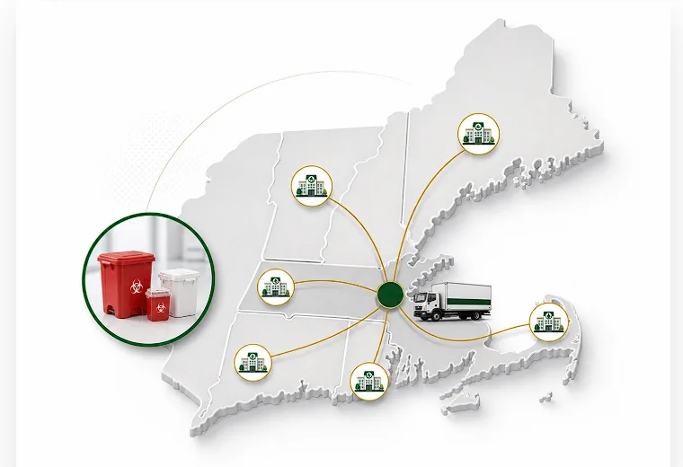

Locations
Medical Waste Disposal Locations
Location-specific medical waste, sharps, pharmaceutical waste, and compliance support for healthcare facilities across New England.
Service Review
Plan medical waste service for your New England facility
Share the basics and the team will help review pickup, containers, records, training, and waste stream needs.
Pickup frequency
Container setup
Documentation
Quick contact
Service Areas
Local Medical Waste Support
United Medical Waste supports healthcare facilities, labs, clinics, universities, and medical offices with location-aware pickup, documentation, and compliance planning.
Regional Coverage
Dispatched from Sutton, MA
United Medical Waste serves facilities throughout Massachusetts, Rhode Island, Connecticut, New Hampshire, Vermont, and Maine. Tell us your facility location, waste streams, container needs, and pickup frequency so the team can match service to your operation.
Get a Quote